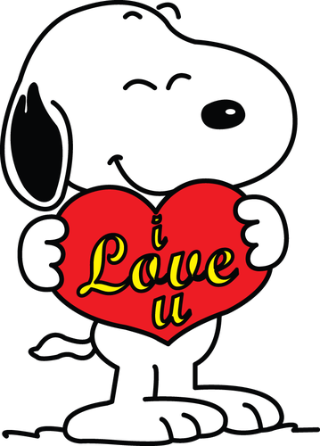

Biblioteca, café y Casa de la Cultura
📍 Tlaxcala
- Comimos
- El café que ella me llevó
- Lugares
- Su facultad, la biblioteca y la Casa de la Cultura
- Ella llevaba
- Trenzas, delineado, brillos blancos, suéter azul de Hello Kitty y zapatitos rosas
"Que lo intentáramos, que siguiéramos con nuestro acuerdo." — Daniel
 Lo que pasó
Lo que pasó
El día empezó bien, llegué a Tlax. Llegué desde temprano porque sabía que de otra manera no me iban a dejar. Llegué al zócalo y compré un guajolocombo, y Linn me dijo que fuera a su facultad para que no estuviera solo (que eso fue muy lindo).
Llegué después de meterme por un callejón que no era. Me dijo que en las mesitas y luego en la biblioteca. Llegó, se veía tan bonita: sus ojos, su delineado, sus brillos blancos, sus trenzas, sus zapatitos rosas, su pantalón negro, su suéter azul de Hello Kitty. Se veía tan hermosa.
Llegó y me llevó un café. Hablamos poquito, cuando dijo que lo había pensado, que me perdonaba, pero no quería hacerme perder mi tiempo. Fue cuando la interrumpí y le dije que lo intentáramos, que siguiéramos con nuestro acuerdo. Iba a suplicarle de rodillas que siguiéramos cuando le dije que me mirara a los ojos y me dijera que ya no quería que intentara nada, que me fuera, y nunca lo hizo.
Después de un rato nos fuimos y entramos a la Casa de la Cultura, lo que fue muy bonito. Nunca había tenido una cita en un lugar así y fue demasiado lindo, hasta que saqué mi teléfono y tuve que marcar a ALUDEC. Lloré, recibí la noticia de que tenía que ir de urgencia. Lloré mucho, sentí que perdí todo y por primera vez en mi vida pude llorar de verdad con alguien, pude ser vulnerable.
Me abrazaste, Linn, me consolaste y me diste un besito en la mejilla y lloré más. Bajamos la escalera, me agarraste la mano y lloré aún más. No fue mi intención, pero espero que de alguna manera hayas visto que puedo cambiar y que me muero de amor por ti.
Te amo, Linn. Perdón por todo, ruego a todo lo santo que podamos arreglar esto. Te amo.
Atentamente: Daniel, tu patito 🖤
